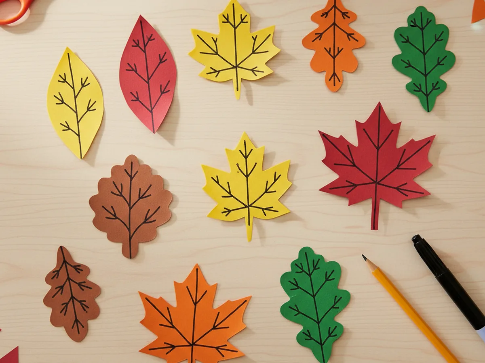
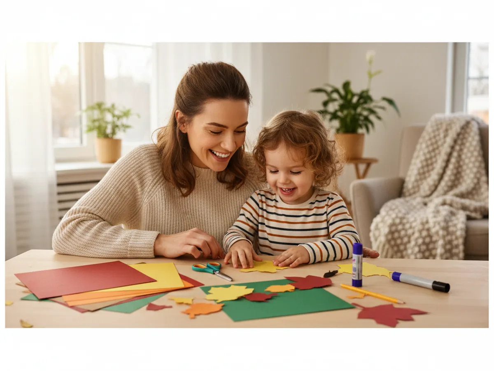
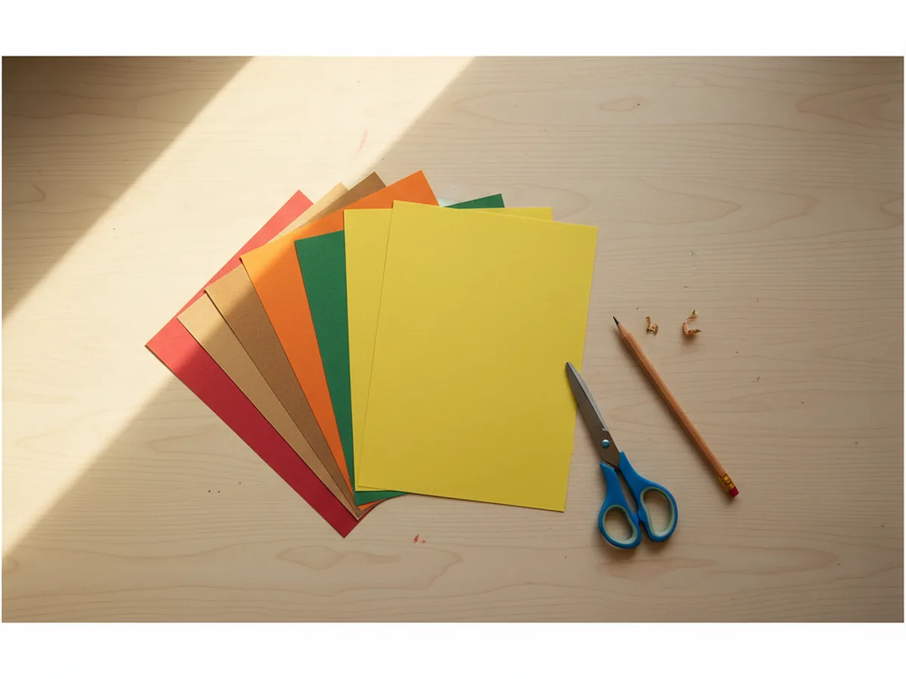
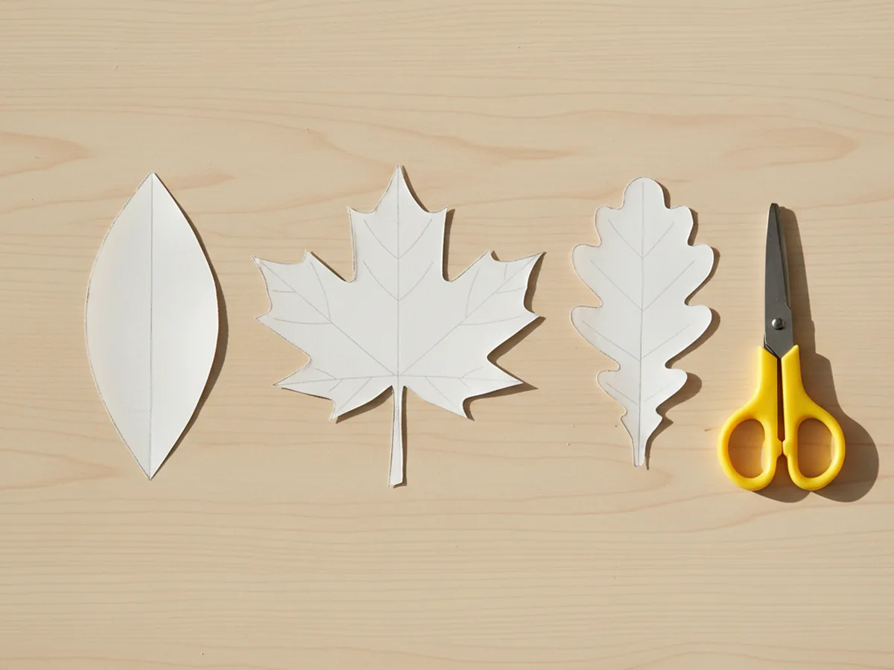
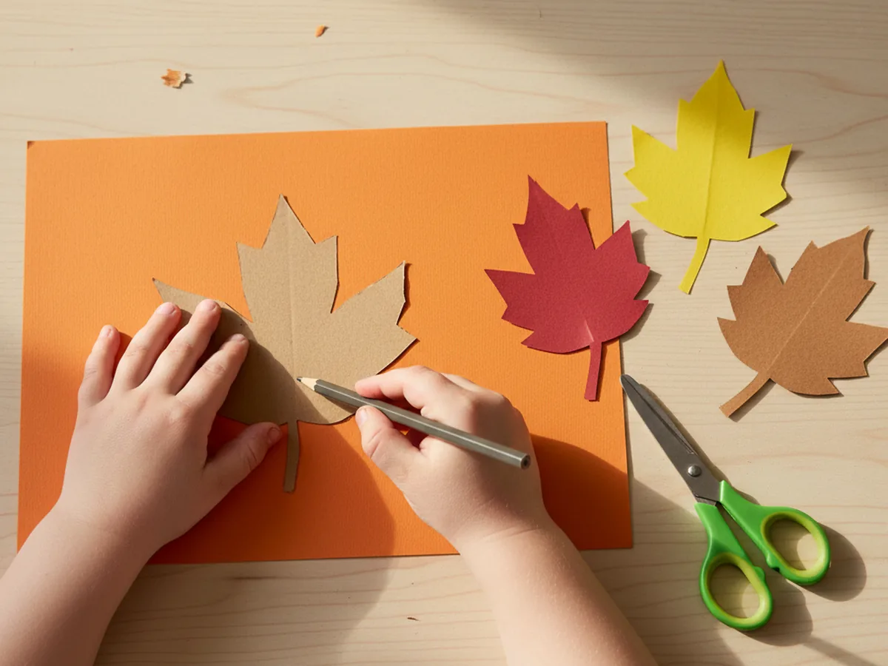
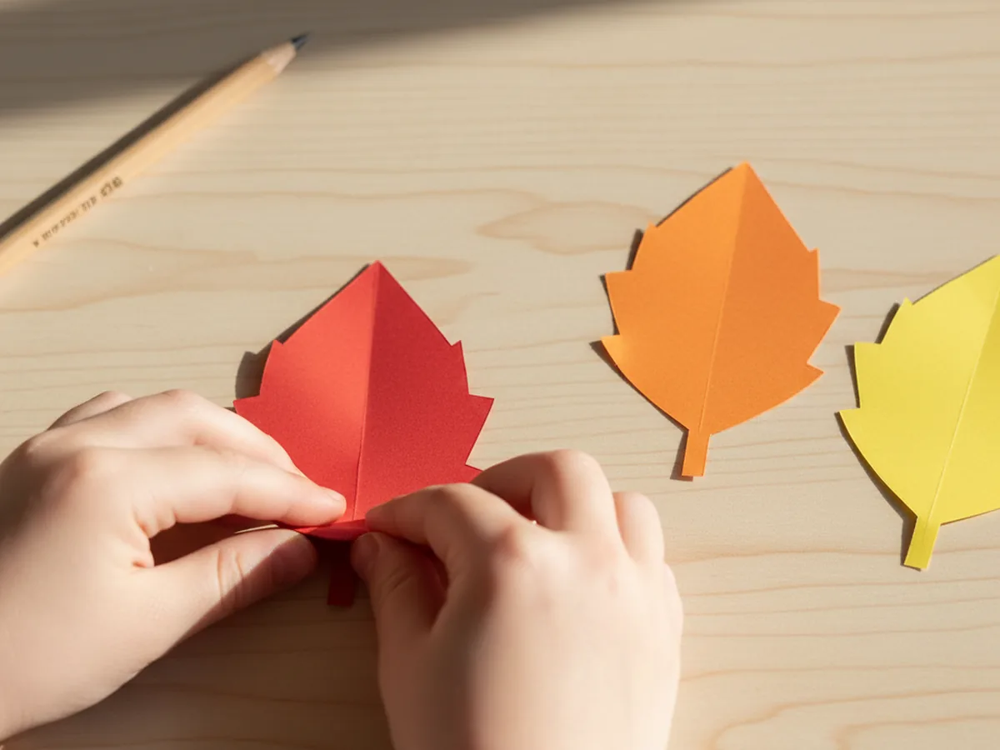
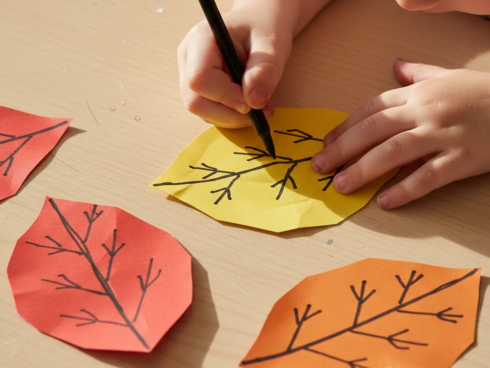
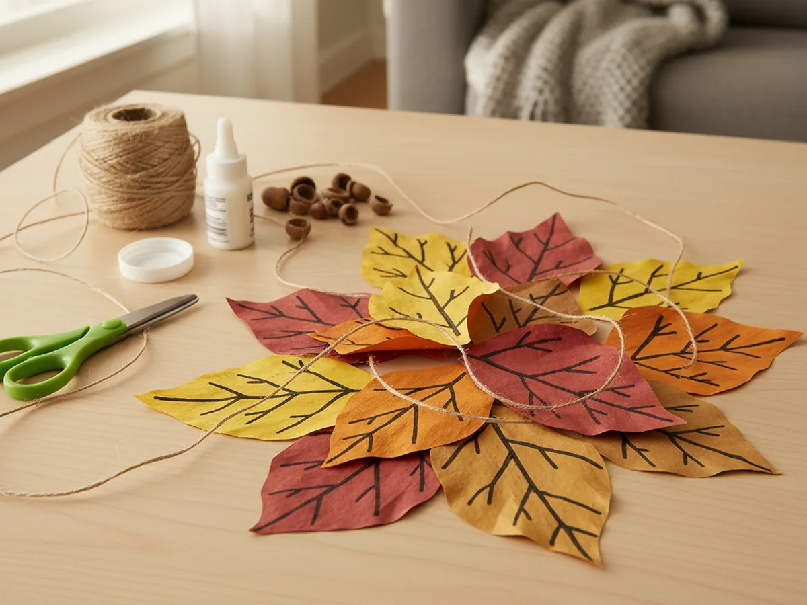

If you have ever wanted a quick, low-stress craft that brings a little bit of cozy autumn warmth into your home, these paper leaves for crafts are the perfect place to start. With just a few sheets of colored construction paper, a pair of scissors, and a marker, you and your child can build a whole little pile of leaves in about half an hour. They look beautiful right on their own, and they also become the building block for dozens of other sweet projects. 🍂
The best part is that paper leaves for crafts truly forgive every wobble. A slightly lopsided shape, an extra crease, a vein that veers off course, all of it just adds personality. That makes this an ideal first project for younger children, and a calming, satisfying one for older kids who love to layer color and decorate.
Why Kids Love This Craft
There is something irresistible about real fall leaves to little ones. The crunchy sound underfoot, the bright colors, and the surprise of finding a pretty one on a walk all feel a little magical. When you turn that fascination into a craft, kids get to be the ones making the colors. Choosing the paper, picking the shape, and watching a plain sheet become a leaf gives them a real sense of ownership.
This paper leaf craft is also wonderful for tiny hands. Tracing around a template builds early pencil control. Cutting along a curved line strengthens those fine motor muscles. Folding the center vein and curling the edges adds in a little sensory enjoyment. Each step is short and gentle, so kids stay engaged without getting frustrated.
And then there is the deeper joy of making something useful. Once your stack of leaves is finished, your child can decide where they go. Taped to the window, scattered along a table runner, glued onto a card for grandma. That feeling of "I made something we are actually going to use" is pure pride for a little one.

What You'll Need
Here is everything you will need to make this easy paper leaf craft together. Lay it all out on the table before you sit down so the activity stays calm and unhurried.
- Crayola Construction Paper (240 sheets, 12 assorted colors), the red, orange, yellow, brown, and green sheets are exactly what you want for this craft.
- Fiskars Pointed-Tip Kids Scissors, perfectly sized for small hands and great for cutting curves.
- Sharpie Fine Point Permanent Markers (Black, 4-Pack), the easiest way to draw clean, pretty leaf veins.
- Crayola Broad Line Markers (10 classic colors), lovely for blending colors right on the leaves before adding veins.
- Elmer's All Purpose School Glue Sticks (30-pack), useful if you plan to glue your finished leaves onto a card or banner.
- A pencil, for tracing the template shapes onto each sheet of paper.
- A scrap piece of cardstock or thick paper, for making the reusable leaf templates.
Step-by-Step Instructions
This paper leaves for crafts tutorial is genuinely easy to follow. Take it one little step at a time and let your child do as much as they can on their own.
Step 1: Choose Your Leaf Colors
Start by pulling out a small stack of paper in autumn colors: red, orange, yellow, brown, and a deep mossy green. You do not need every color, just two or three you love together. Letting your child pick the shades makes the craft feel like theirs from the very first moment, and it sparks all sorts of sweet little chats about which leaves they have spotted on walks lately.
If you want extra texture, mix construction paper with a sheet or two of cardstock. The cardstock leaves hold their shape better, while the construction paper ones are softer and easier for little hands to cut.

Step 2: Make Simple Leaf Templates
Grab a piece of cardstock or any scrap paper and sketch two or three simple leaf shapes onto it with a pencil. A basic pointed oval is the easiest, and a five-lobed maple shape and a wavy oak shape add lovely variety. Keep the shapes around three to five inches tall so they are easy to cut. Once you have drawn them, cut them out neatly to make reusable templates.

Step 3: Trace and Cut the Leaves
Place a template on a sheet of colored paper, hold it firmly with one hand, and trace around the edge with a pencil. Lift the template, slide it to a new spot, and trace again. You can fit four or five leaves on a single sheet. Once your child has a page full of pencil outlines, let them cut along the lines.
Slightly wobbly cuts are completely fine. Real leaves are uneven too, and a little imperfection makes the whole pile look more natural. Mix sizes and colors freely so your collection ends up looking like a real little autumn moment.

Step 4: Add a Center Vein Crease
Take each finished leaf and gently fold it in half right down the middle, with the two pointed ends meeting. Press along the fold with your fingernail to make a soft crease, then open the leaf back up. That little center fold instantly gives the paper a more natural, leaf-like feel. It also gives your child a clear guide for where to draw the main vein in the next step. 🍃
For very young children, you can do the folding for them and let them practice opening the leaves back up. Each one feels like a tiny surprise.

Step 5: Draw the Branching Veins
Now use a fine black marker to bring each leaf to life. Start by drawing one straight line along the center fold to form the main vein. Then add four or five smaller diagonal veins branching out from the center to the edges. Curve them softly so they look natural. Do not worry about symmetry. Real leaves are never perfectly even, and that is part of the charm.

Step 6: Curl the Edges and Display
For the final step, gently curl the edges of each leaf. The easiest way is to lay a leaf flat, place a pencil along one edge, and softly roll the paper around the pencil before letting it spring back. You can also pinch each edge between your thumb and finger and pull lightly to create a little wave. The leaves end up looking like they have just dropped from a tree.
Now your paper leaves for crafts are ready. Scatter them along the dinner table, tape them to a window, glue them onto a thank-you card, or string them into a little garland with a needle and thread. Whatever your child decides, this is the moment they get to say "look what we made together." ✨

Variations to Try
Watercolor Blended Leaves: Instead of construction paper, cut your leaves from plain white cardstock and let your child blend two or three watercolor shades across each one before drawing the veins. The colors bleed together softly and every leaf turns out one of a kind. This version is wonderful for slightly older kids who love painting.
Mini Leaf Garland: Punch a small hole at the top of each finished leaf with a hole punch, then thread them onto a long piece of jute twine or yarn to make a simple autumn garland. Drape it across a mantel, a bookshelf, or the back of a kitchen chair for instant cozy seasonal decor.
Tissue Paper Layered Leaves: Stack two or three sheets of colored tissue paper, trace a leaf shape on top, and cut through all the layers at once. Glue them together at the center so the edges fan out slightly. The result is delicate, dimensional, and lovely as a window decoration when light shines through.
Final Thoughts
This paper leaves for crafts tutorial is one of those small projects that ends up bringing a real bit of joy into the house. It costs almost nothing, takes about half an hour, and leaves you with a sweet little pile of handmade leaves that can decorate your home or feed into dozens of other crafts. Best of all, you and your child get a quiet, cozy moment of making something together. 💛
If your little one makes their own paper leaves, I would love to see them. Save this article on Pinterest so other craft-loving mamas can find it easily. Happy crafting!
More Crafts You'll Love
If your child enjoyed this paper leaves for crafts tutorial, they will adore these other warm and easy seasonal projects too: